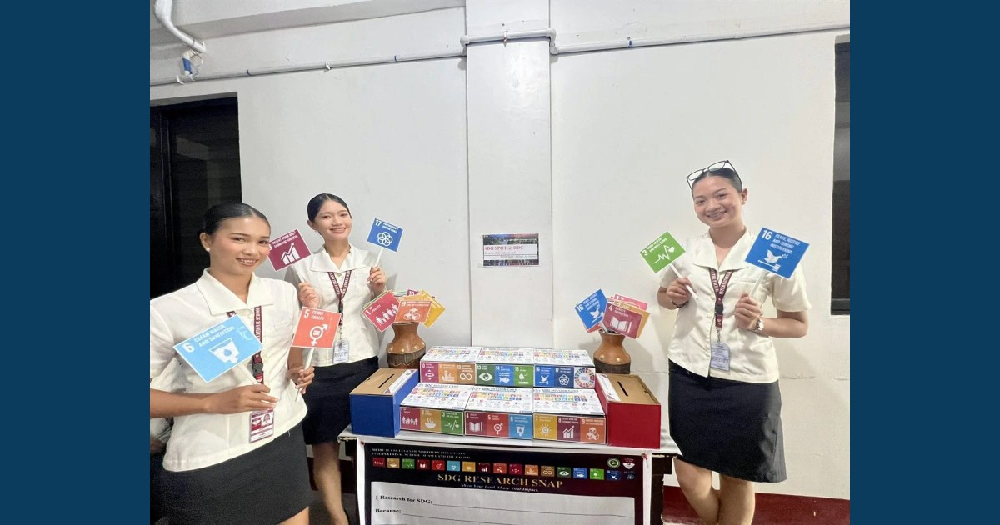

Pick a Goal. Raise Your Flag. Make Your Impact.

The SDG SPOT @ RDC: Research for the Goals officially came to life through its soft opening on August 28, 2026, in front of the Research and Development Center. Students, employees, and alumni joined by choosing an SDG to support, raising its flaglet, and capturing their commitment at the SDG Corner.
Read full article